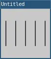

while
A way to repeat a block of code.
while loops are helpful for repeating statements while a condition is true. They're like if statements that repeat. For example, a while loop makes it easy to express the idea "draw several lines" like so:
-- Declare a variable to keep track of iteration
local x = 10
-- Repeat as long as x < 100
while x < 100 do
line(x, 25, x, 75)
-- Increment by 20.
x = x + 20
end
The loop's header begins with the keyword while. Loops generally count up or count down as they repeat, or iterate. The statement in parentheses x < 100 is a condition the loop checks each time it iterates. If the condition is true, the loop runs the code between the do and end. The code between these is called the loop's body. If the condition is false, the body is skipped and the loop is stopped.
It's common to create infinite loops accidentally. For example, the following loop never stops iterating because it doesn't count up (warning: it could also crash your computer!):
-- Declare a variable to keep track of iteration.
-- Running this code could crash your computer
local x = 10
-- Repeat as long as x < 100
while x < 100 do
line(x, 25, x, 75)
end
-- This should be in the loop's body!
x = x + 20
The statement x = x + 20 appears after the loop's body. That means the variable x is stuck at 10, which is always less than 100.
while loops are useful when the number of iterations isn't known in advance. For example, concentric circles could be drawn at random increments:
local d = 100
local minSize = 5
while d > minSize do
circle(50, 50, d)
d = d - random(10)
end
Examples

require("L5")
function setup()
size(100, 100)
describe('Five black vertical lines on a gray background.')
end
function draw()
background(200)
-- Declare a variable to keep track of iteration.
local x = 10
-- Repeat as long as x < 100
while x < 100 do
line(x, 25, x, 75)
-- Increment by 20.
x = x + 20
end
end
Related
This reference page contains content adapted from p5.js and Processing by p5.js Contributors and Processing Foundation, licensed under CC BY-NC-SA 4.0.